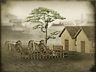

Requires
- Buildings: 
- Arts:

Enables
Basic Building Statistics (can be modified by difficulty level, arts, skills, traits and retainers)
- Cost: 6800
- Recruitment capacity (units in training): +1
- -1 to happiness from modernisation
Clan Effects
- +2 to modernisation (clan development)
Description
Mastery of the dark arts of ballistics brings many benefits.
An artillery academy allows the training of artillery units. Artillery was an aspect of military technology that benefitted from the rapid industrialisation of almost everything during the 19th Century. Industry put new tools into the hands of artillery officers: better guns, new ammunition, cheap telescopes, revolvers for personal defence and, best of all, new ways of reliably using artillery. It was now possible to use indirect fire with a good deal of precision. Direct fire was the traditional way of using heavy guns: firing at enemies that could be seen in front of the artillery position. With indirect fire, the guns fired blind into an area where the enemy were, and had their aim adjusted by a forward observer. This demanded new techniques of co-operation, and a good deal of training for all the soldiers involved.